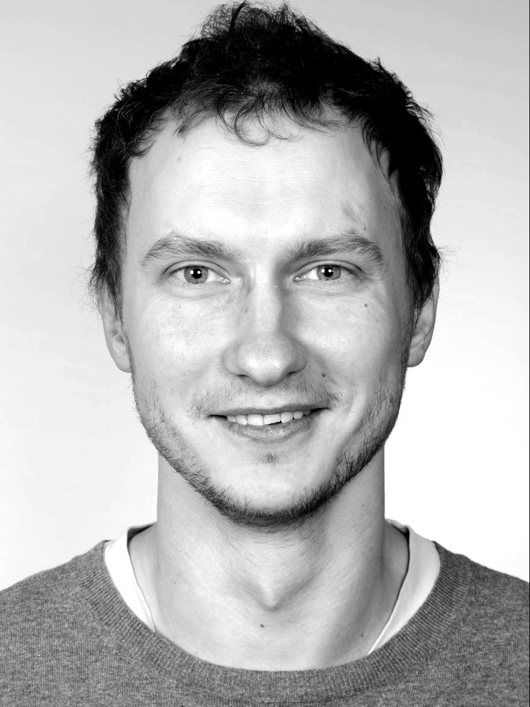

<!doctype html>
<html lang="en">
<head>
<meta charset="utf-8">
<meta name="viewport" content="width=device-width, initial-scale=1, viewport-fit=cover">
<title>Pavel Sekatski</title>
<meta name="description" content="Pavel Sekatski, theoretical physicist working on quantum information: network nonlocality, quantum metrology, self-testing and device-independent cryptography.">
<link rel="preconnect" href="https://fonts.googleapis.com">
<link rel="preconnect" href="https://fonts.gstatic.com" crossorigin>
<link rel="stylesheet" href="https://fonts.googleapis.com/css2?family=Literata:opsz,wght@7..72,400;7..72,600&family=Figtree:wght@400;500;600&family=IBM+Plex+Mono:wght@400;500&display=swap">
<style>
:root{
  --bg:#F4F5F8; --surface:#FFFFFF; --ink:#151B26; --muted:#5A6272; --line:#E1E4EB;
  --accent:#3F3AA8; --accent-soft:#ECEBFA; --amber:#C77D14; --amber-soft:#FBF1E1;
  --draft:#8A5A00; --draft-bg:#FFF6DC;
  --shadow:0 1px 2px rgba(21,27,38,.05),0 8px 24px -12px rgba(21,27,38,.12);
  --serif:"Literata",Georgia,"Times New Roman",serif;
  --sans:"Figtree",system-ui,-apple-system,"Segoe UI",sans-serif;
  --mono:"IBM Plex Mono",ui-monospace,Menlo,Consolas,monospace;
}
@media (prefers-color-scheme:dark){:root:not([data-theme="light"]){
  color-scheme:dark;
  --bg:#10131A; --surface:#181C26; --ink:#E8EAF0; --muted:#9AA1B0; --line:#2A3040;
  --accent:#A9A4FF; --accent-soft:#25234A; --amber:#F0A94A; --amber-soft:#3A2A12;
  --draft:#F3CF7A; --draft-bg:#3A3015;
  --shadow:0 1px 2px rgba(0,0,0,.3),0 8px 24px -12px rgba(0,0,0,.5);
}}
:root[data-theme="dark"]{
  color-scheme:dark;
  --bg:#10131A; --surface:#181C26; --ink:#E8EAF0; --muted:#9AA1B0; --line:#2A3040;
  --accent:#A9A4FF; --accent-soft:#25234A; --amber:#F0A94A; --amber-soft:#3A2A12;
  --draft:#F3CF7A; --draft-bg:#3A3015;
  --shadow:0 1px 2px rgba(0,0,0,.3),0 8px 24px -12px rgba(0,0,0,.5);
}
*{box-sizing:border-box}
body{background:var(--bg);color:var(--ink);font:16px/1.6 var(--sans);padding-inline:20px;padding-block:40px 56px}
a{color:var(--accent);text-decoration-thickness:1px;text-underline-offset:3px}
a:focus-visible,button:focus-visible{outline:2px solid var(--accent);outline-offset:3px;border-radius:6px}
h1,h2,h3{font-family:var(--serif);font-weight:600;text-wrap:balance;margin:0;line-height:1.2}
.wrap{max-width:1120px;margin:0 auto;display:grid;grid-template-columns:300px minmax(0,1fr);gap:40px;align-items:start}
@media (max-width:860px){.wrap{grid-template-columns:1fr;gap:28px}}

/* profile */
.profile{position:sticky;top:calc(env(safe-area-inset-top,0px) + 24px);background:var(--surface);border:1px solid var(--line);border-radius:16px;box-shadow:var(--shadow);overflow:hidden}
@media (max-width:860px){.profile{position:static}}
.pbody{padding:24px;display:grid;gap:14px}
.avatar{width:104px;height:104px;border-radius:50%;object-fit:cover;object-position:50% 30%;background:var(--surface);border:3px solid var(--surface);box-shadow:0 0 0 1px var(--line);display:block}
.profile h1{font-size:1.65rem}
.role{color:var(--muted);font-size:.95rem;margin:0}
.meta{list-style:none;padding:0;margin:0;display:grid;gap:6px;font-size:.92rem;color:var(--muted)}
.meta li{display:flex;gap:10px;align-items:center}
.meta svg{flex:none;width:16px;height:16px;stroke:currentColor;fill:none;stroke-width:1.6}
.links{display:flex;flex-wrap:wrap;gap:8px}
.chip{display:inline-flex;align-items:center;gap:6px;padding:6px 12px;border:1px solid var(--line);border-radius:999px;font-size:.85rem;font-weight:500;color:var(--ink);text-decoration:none;background:var(--surface);cursor:pointer;font-family:var(--sans)}
.chip:hover{border-color:var(--accent);color:var(--accent)}
.chip[aria-pressed="true"]{background:var(--accent);border-color:var(--accent);color:var(--surface)}
.draft{background:var(--draft-bg);color:var(--draft);font:500 .72rem/1 var(--mono);padding:3px 6px;border-radius:4px;letter-spacing:.02em;white-space:nowrap}

/* main */
main{display:grid;gap:48px;min-width:0}
section{display:grid;gap:18px}
.eyebrow{font:500 .75rem/1 var(--mono);letter-spacing:.12em;text-transform:uppercase;color:var(--muted)}
.sechead{display:flex;align-items:baseline;justify-content:space-between;gap:12px;flex-wrap:wrap}
.sechead h2{font-size:1.6rem}
.prose{max-width:65ch;display:grid;gap:12px}
.prose p{margin:0}
.lead{font-family:var(--serif);font-size:1.22rem;line-height:1.55}

.news{list-style:none;margin:0;padding:0;display:grid;gap:10px;max-width:70ch}
.news li{display:grid;grid-template-columns:88px 1fr;gap:14px;font-size:.95rem}
.news time{font:500 .82rem/1.8 var(--mono);color:var(--muted);font-variant-numeric:tabular-nums}

/* topic cards */
.topics{display:grid;grid-template-columns:repeat(auto-fill,minmax(250px,1fr));gap:16px}
.topic{all:unset;box-sizing:border-box;cursor:pointer;display:grid;grid-template-rows:auto 1fr auto;gap:12px;padding:20px;background:var(--surface);border:1px solid var(--line);border-radius:14px;transition:border-color .2s,transform .2s,box-shadow .2s}
.topic:hover{border-color:var(--accent);transform:translateY(-2px);box-shadow:var(--shadow)}
.topic:focus-visible{outline:2px solid var(--accent);outline-offset:3px}
.topic .glyph{width:48px;height:48px;border-radius:12px;background:var(--accent-soft);display:grid;place-items:center}
.topic h3{font-size:1.15rem}
.topic p{margin:0;color:var(--muted);font-size:.93rem}
.topic .more{font:500 .8rem/1 var(--mono);color:var(--accent)}
.glyph svg{width:30px;height:30px;stroke:var(--accent);fill:none;stroke-width:1.6}
.glyph svg .fillA{fill:var(--accent);stroke:none}
.glyph svg .fillB{fill:var(--amber);stroke:none}

/* publications */
.filters{display:flex;flex-wrap:wrap;gap:8px}
.pubs{list-style:none;margin:0;padding:0;display:grid;gap:14px}
.pub{display:grid;grid-template-columns:72px minmax(0,1fr);gap:18px;padding:16px;background:var(--surface);border:1px solid var(--line);border-radius:12px}
.pub .glyph{width:72px;height:72px;border-radius:10px;background:var(--accent-soft);display:grid;place-items:center}
.pub .glyph svg{width:40px;height:40px}
.pub h3{font-size:1.02rem;line-height:1.35}
.pub .venue{margin:4px 0 8px;color:var(--muted);font-size:.9rem}
.pub .venue em{color:var(--ink);font-style:italic}
.pub .plinks{display:flex;flex-wrap:wrap;gap:12px;font:500 .8rem/1 var(--mono)}
.pub .tag{font:500 .72rem/1 var(--mono);color:var(--amber);background:var(--amber-soft);padding:3px 7px;border-radius:4px}
.note{font-size:.88rem;color:var(--muted);max-width:70ch;margin:0}

/* topic detail */
.back{all:unset;cursor:pointer;font:500 .85rem/1 var(--mono);color:var(--accent);display:inline-flex;gap:8px;align-items:center;width:max-content}
.detail-head{display:grid;grid-template-columns:auto 1fr;gap:20px;align-items:center}
.detail-head .glyph{width:72px;height:72px;border-radius:16px;background:var(--accent-soft);display:grid;place-items:center}
.detail-head .glyph svg{width:44px;height:44px}
.detail-head h2{font-size:clamp(1.7rem,4vw,2.3rem)}
.questions{margin:0;padding-left:1.2em;display:grid;gap:6px;max-width:65ch}
.panel{background:var(--surface);border:1px solid var(--line);border-radius:14px;padding:20px 22px;display:grid;gap:10px;max-width:72ch}
.panel h3{font-size:1.05rem}
footer{max-width:1120px;margin:56px auto 0;color:var(--muted);font-size:.85rem;border-top:1px solid var(--line);padding-top:18px;display:flex;justify-content:space-between;gap:12px;flex-wrap:wrap}
@media (max-width:520px){.news li{grid-template-columns:1fr;gap:0}.pub{grid-template-columns:1fr}.pub .glyph{width:56px;height:56px}}
@media (prefers-reduced-motion:reduce){*{transition:none!important}}

.big{font-size:clamp(1.7rem,4vw,2.3rem)}
.plain{color:var(--ink);text-decoration:none}.plain:hover{color:var(--accent);text-decoration:underline}
.auth{color:var(--muted);font-size:.88rem;margin:4px 0 0}
.auth strong{color:var(--ink);font-weight:600}
.pub .venue{margin:2px 0 8px}
.tags{display:flex;flex-wrap:wrap;gap:6px}
button.tag{all:unset;cursor:pointer;font:500 .72rem/1 var(--mono);color:var(--amber);background:var(--amber-soft);padding:4px 7px;border-radius:4px}
button.tag:hover{text-decoration:underline}
button.tag:focus-visible{outline:2px solid var(--accent);outline-offset:2px}
.stats{display:grid;grid-template-columns:repeat(3,minmax(0,1fr));gap:1px;margin:6px 0 0;background:var(--line);border:1px solid var(--line);border-radius:12px;overflow:hidden;max-width:480px}
.stats div{background:var(--surface);padding:12px 16px;display:flex;flex-direction:column-reverse;gap:2px}
.stats dt{font:500 .7rem/1.3 var(--mono);letter-spacing:.06em;text-transform:uppercase;color:var(--muted)}
.stats dd{margin:0;font:600 1.4rem/1.1 var(--serif);font-variant-numeric:tabular-nums}
@media (max-width:400px){.stats div{padding:10px 12px}}
.tools{display:flex;gap:12px;flex-wrap:wrap}
.search{flex:1 1 280px;max-width:520px}
.search input{width:100%;font:inherit;font-size:.95rem;padding:10px 14px;border:1px solid var(--line);border-radius:10px;background:var(--surface);color:var(--ink)}
.search input:focus{outline:2px solid var(--accent);outline-offset:1px;border-color:transparent}
.sr{position:absolute;width:1px;height:1px;overflow:hidden;clip:rect(0 0 0 0)}
.count{font:500 .8rem/1 var(--mono);color:var(--muted);margin:8px 0 0}
.yearhead{font:600 1.05rem/1 var(--serif);margin:26px 0 6px;padding-bottom:8px;border-bottom:1px solid var(--line);font-variant-numeric:tabular-nums}
.plist{list-style:none;margin:0;padding:0;display:grid}
.row{display:grid;gap:2px;padding:12px 0;border-bottom:1px solid var(--line);max-width:80ch}
.row:last-child{border-bottom:0}
.rtitle{color:var(--ink);font-weight:600;text-decoration:none;line-height:1.4}
.rtitle:hover{color:var(--accent);text-decoration:underline}
.row .auth{margin:0}
.row .venue{font-size:.88rem;color:var(--muted)}
.row .venue em{color:var(--ink)}
.pre{font:500 .7rem/1 var(--mono);color:var(--accent);background:var(--accent-soft);padding:3px 6px;border-radius:4px;margin-left:4px}
</style>

<style>body{margin:0}img{max-width:100%}[hidden]{display:none!important}</style>
</head>
<body>
<div class="wrap">
  <aside class="profile" aria-label="Profile">
    <div class="pbody">
      
      <div>
        <h1>Pavel Sekatski</h1>
        <p class="role">Theoretical physicist · Quantum information</p>
      </div>
      <ul class="meta">
        <li><svg viewBox="0 0 24 24"><path d="M3 21h18M5 21V9l7-5 7 5v12M9 21v-6h6v6"/></svg><span>University of Geneva</span></li>
        <li><svg viewBox="0 0 24 24"><rect x="3" y="5" width="18" height="14" rx="2"/><path d="m3 7 9 6 9-6"/></svg><a href="mailto:pavel.sekatski@gmail.com" style="color:inherit">pavel.sekatski@gmail.com</a></li>
      </ul>
      <div class="links">
        <a class="chip" href="https://arxiv.org/a/sekatski_p_1" target="_blank" rel="noopener">arXiv</a>
        <a class="chip" href="https://scholar.google.com/scholar?q=%22Pavel+Sekatski%22" target="_blank" rel="noopener">Scholar</a>
        <a class="chip" href="https://orcid.org/0000-0001-8455-020X" target="_blank" rel="noopener">ORCID</a>
      </div>
    </div>
  </aside>

  <main id="main"></main>
</div>
<footer><span>© 2026 Pavel Sekatski</span><span>University of Geneva</span></footer>

<script>
/* ---------- glyphs (one per topic) ---------- */
const G = {
  network:`<svg viewBox="0 0 40 40"><path d="M20 6 34 31H6z"/><circle class="fillB" cx="20" cy="6" r="3.2"/><circle class="fillB" cx="34" cy="31" r="3.2"/><circle class="fillB" cx="6" cy="31" r="3.2"/><circle class="fillA" cx="27" cy="18.5" r="2.4"/><circle class="fillA" cx="13" cy="18.5" r="2.4"/><circle class="fillA" cx="20" cy="31" r="2.4"/></svg>`,
  metrology:`<svg viewBox="0 0 40 40"><path d="M4 20c3-10 6-10 9 0s6 10 9 0 6-10 9 0 3 6 5 6"/><path d="M4 33h32" stroke-dasharray="2 3"/><circle class="fillB" cx="22" cy="20" r="2.6"/></svg>`,
  selftest:`<svg viewBox="0 0 40 40"><rect x="4" y="12" width="12" height="16" rx="2"/><rect x="24" y="12" width="12" height="16" rx="2"/><path d="M16 20h8" stroke-dasharray="2 2"/><path d="M10 12V7M30 12V7M10 33v-5M30 33v-5"/><path d="m7 20 2 2 4-4" /><circle class="fillB" cx="30" cy="20" r="2.6"/></svg>`,
  catalysis:`<svg viewBox="0 0 40 40"><path d="M20 20c-3-4-6-7-10-7a7 7 0 0 0 0 14c4 0 7-3 10-7s6-7 10-7a7 7 0 0 1 0 14c-4 0-7-3-10-7z"/><circle class="fillB" cx="10" cy="20" r="2.6"/><circle class="fillB" cx="30" cy="20" r="2.6"/></svg>`,
  diqkd:`<svg viewBox="0 0 40 40"><rect x="13" y="18" width="14" height="12" rx="2"/><path d="M15.5 18v-4a4.5 4.5 0 0 1 9 0v4"/><circle class="fillB" cx="20" cy="24" r="2"/><path d="M4 24h6M30 24h6" stroke-dasharray="2 2"/></svg>`,
  memory:`<svg viewBox="0 0 40 40"><path d="M4 20h9"/><path d="M27 20h9"/><rect x="13" y="12" width="14" height="16" rx="3"/><path d="M17 17v6M20 15v10M23 17v6"/><circle class="fillB" cx="6" cy="20" r="2"/></svg>`,
  macro:`<svg viewBox="0 0 40 40"><path d="M8 18V7l6 5h12l6-5v11A12 12 0 0 1 8 18z"/><path d="M20 12v18" stroke-dasharray="2 2"/><circle class="fillB" cx="14" cy="19" r="2.2"/><path d="M24.5 17l4 4M28.5 17l-4 4"/><path d="M16.5 25q1.75 1.5 3.5 0q1.75 1.5 3.5 0"/></svg>`,
  control:`<svg viewBox="0 0 40 40"><path d="M4 30h32"/><path d="M8 30V18M16 30V10M24 30V22M32 30V14"/><circle class="fillB" cx="8" cy="18" r="2.4"/><circle class="fillB" cx="16" cy="10" r="2.4"/><circle class="fillB" cx="24" cy="22" r="2.4"/><circle class="fillB" cx="32" cy="14" r="2.4"/></svg>`
};

/* ---------- content (edit here) ---------- */
const TOPICS = [
  {id:"network-nonlocality", g:"network", title:"Nonlocality and networks",
   blurb:"Quantum correlations in networks with several independent sources, such as the triangle network.",
   overview:"In a Bell test one source is shared by all parties. In a network, several independent sources each connect only some of the parties. Independence of the sources makes the set of classical correlations non-convex and allows new forms of nonlocality, some without any measurement inputs. I study which network correlations have no classical explanation, how robust they are to noise and unreliable sources, and what they certify about states, measurements and randomness.",
   questions:["Which network correlations have no classical explanation, and how robust is that to noise?","Can a network certify states and measurements without seed randomness?","What can independence of sources prove about quantum theory itself, for example the need for complex numbers?"],
   key:[3,10,6,20,5]},
  {id:"metrology", g:"metrology", title:"Quantum metrology & sensing",
   blurb:"Fundamental limits on estimating parameters with quantum probes, under noise, control and at thermal equilibrium.",
   overview:"Entangled probes can improve estimation precision beyond the standard quantum limit, but noise usually removes the quadratic advantage asymptotically. I study how far quantum control, error correction, adaptive and Bayesian protocols, and distributed sensor networks can push precision under realistic noise, and what the limits are for many-body and thermal probes.",
   questions:["When does fast, full quantum control recover Heisenberg scaling?","What limits precision for many-body probes and at thermal equilibrium?","How should distributed sensor networks be designed in noisy environments?"],
   key:[9,7,61,63,65]},
  {id:"self-testing", g:"selftest", title:"Self-testing & DI certification",
   blurb:"Certifying quantum devices from observed statistics alone, without trusting their inner workings.",
   overview:"Self-testing infers the state and measurements inside black-box devices from Bell-type statistics, up to local isometries. I develop robust self-testing statements for experimentally relevant noise and finite statistics, and apply them to the components of quantum technologies: entangling gates, Bell state measurements, network links, frequency converters and quantum memories.",
   questions:["How can the building blocks of a quantum computer be certified from Bell tests?","What is the minimal CHSH score that certifies a state close to the singlet?","Which entangled states and operations are self-testable at all?"],
   key:[58,57,48,14,105]},
  {id:"entanglement", g:"catalysis", title:"Entanglement, steering & catalysis",
   blurb:"Structure of entanglement, steering and nonlocality, including catalytic activation of quantum resources.",
   overview:"A catalyst is an auxiliary system that enables a transformation and is returned unchanged. I study what catalysis allows for entanglement and nonlocality, including genuine multipartite entanglement under local operations, and how entanglement, steering, measurement incompatibility and nonlocality relate as resources.",
   questions:["Can catalysts activate Bell nonlocality or genuine multipartite entanglement?","How strong can one-way steering be?","How do measurement incompatibility and steering relate in high dimensions?"],
   key:[97,4,1,19,30]},
  {id:"diqkd", g:"diqkd", title:"Device-independent QKD",
   blurb:"Key distribution whose security follows from Bell violation, not from device models.",
   overview:"Device-independent QKD bases security on the observed violation of a Bell inequality. The main challenge is the high detection efficiency and low noise it requires. I work on protocols that lower these thresholds, such as noisy preprocessing, generalized CHSH inequalities and routed Bell tests, on finite-size security, and on their first experimental realization.",
   questions:["Which protocol changes lower the detection-efficiency threshold?","Can device-independent security be extended to arbitrary distances?","Which assumptions can be dropped in practical QKD?"],
   key:[34,110,32,47,42]},
  {id:"memories", g:"memory", title:"Modeling quantum optics experiments",
   blurb:"Realistic models of photonic, atomic and solid-state experiments, from light–matter interfaces to detectors, and how to certify them.",
   overview:"Many of my papers are written with experimental groups. I build models of real setups, including their losses, noise, detector imperfections and calibration uncertainties, to design experiments, predict what they can achieve and interpret their data. Platforms include quantum memories, trapped-ion network nodes, quantum dots in cavities, single-photon sources and photon-number-resolving detectors. A recurring aim is certification that is meaningful to experimentalists and robust to imperfect devices.",
   questions:["How should imperfect devices be modeled so that claims about them stay reliable?","What does it take to certify that a memory preserves quantum information?","How should single-photon sources and photon-number-resolving detectors be benchmarked?"],
   key:[100,18,27,54,16]},
  {id:"macroscopic", g:"macro", title:"Macroscopic quantum states",
   blurb:"Measures, fragility and detection of quantum superpositions at large scales.",
   overview:"When is a quantum state macroscopic, and why are such states so hard to observe? I have worked on measures of macroscopic quantumness, on why these states are fragile and demand very precise measurements, and on proposals and experiments that move entanglement between the micro and macro domains, including detection with the human eye.",
   questions:["How should the size of a quantum superposition be quantified?","Why do macroscopic quantum states require tremendous measurement precision?"],
   key:[59,56,60,78,82]},
  {id:"control", g:"control", title:"Control, thermodynamics & computing",
   blurb:"Quantum control, thermodynamic limits of operations, and quantum computing and learning.",
   overview:"This line covers the resources needed to implement quantum operations: control and gates between hot or remote systems, energy and coherence requirements of gates, thermalization bounds, the dimension of operations, entanglement purification, and quantum machine learning.",
   questions:["What resources does a quantum gate fundamentally consume?","How much dimension does a quantum operation really need?"],
   key:[0,99,12,39,41]}
];

/* All publications, generated from publicationsSep26.pdf. kind: "journal" or "preprint". */
const PUBS = [
{"id": 0, "kind": "journal", "title": "An information-theoretic proof of the Planckian bound for thermalization", "authors": "Paolo Abiuso, Alberto Rolandi, John Calsamiglia, Pavel Sekatski, Martí Perarnau-Llobet", "venue": "Nature Physics", "year": 2026, "url": "https://doi.org/10.1038/s41567-026-03397-y", "topics": ["control"]},
{"id": 1, "kind": "journal", "title": "The power of quantum catalytic local operations", "authors": "Patryk Lipka-Bartosik, Jessica Bavaresco, Nicolas Brunner, Pavel Sekatski", "venue": "Phys. Rev. A 113, 062216", "year": 2026, "url": "https://doi.org/10.1103/4cjg-tkzg", "topics": ["entanglement"]},
{"id": 2, "kind": "journal", "title": "Quantum sensing of a quantum field", "authors": "Ricard Ravell Rodríguez, Martí Perarnau-Llobet, Pavel Sekatski", "venue": "SciPost Phys. 20, 107", "year": 2026, "url": "https://doi.org/10.21468/SciPostPhys.20.4.107", "topics": ["metrology"]},
{"id": 3, "kind": "journal", "title": "Bell nonlocality in quantum networks with unreliable sources: Loophole-free postelection via self-testing", "authors": "Sadra Boreiri, Nicolas Brunner, Pavel Sekatski", "venue": "Phys. Rev. Lett. 135, 160802", "year": 2025, "url": "https://doi.org/10.1103/bqwm-ll5y", "topics": ["network-nonlocality"]},
{"id": 4, "kind": "journal", "title": "Catalytic Activation of Bell Nonlocality", "authors": "J. Bavaresco, N. Brunner, A. Girardin, P. Lipka-Bartosik, P. Sekatski", "venue": "Phys. Rev. Lett. 135, 220203", "year": 2025, "url": "https://doi.org/10.1103/5dth-7zm8", "topics": ["entanglement"]},
{"id": 5, "kind": "journal", "title": "Partial independence suffices to prove real Hilbert spaces insufficient in quantum physics", "authors": "Mirjam Weilenmann, Nicolas Gisin, Pavel Sekatski", "venue": "Phys. Rev. Lett. 135, 180201", "year": 2025, "url": "https://doi.org/10.1103/3fv7-p8cs", "topics": ["network-nonlocality"]},
{"id": 6, "kind": "journal", "title": "Noise-robust proofs of quantum network nonlocality", "authors": "S. Boreiri, B. Ulu, N. Brunner, P. Sekatski", "venue": "Quantum 9, 1830", "year": 2025, "url": "https://quantum-journal.org/papers/q-2025-08-27-1830/", "topics": ["network-nonlocality"]},
{"id": 7, "kind": "journal", "title": "From dynamical to steady-state many-body metrology: Precision limits and their attainability with two-body interactions", "authors": "R. Puig, P. Sekatski, P.A. Erdman, P. Abiuso, J. Calsamiglia, M. Perarnau-Llobet", "venue": "PRX Quantum 6 (3), 030309", "year": 2025, "url": "https://link.aps.org/doi/10.1103/PRXQuantum.6.030309", "topics": ["metrology"]},
{"id": 8, "kind": "journal", "title": "Selective and noise-resilient wave estimation with quantum sensor networks", "authors": "A. Hamann, P. Aigner, W. Dür, P. Sekatski", "venue": "Quantum Science and Technology 10 (3), 035028", "year": 2025, "url": "https://iopscience.iop.org/article/10.1088/2058-9565/add61b/meta", "topics": ["metrology"]},
{"id": 9, "kind": "journal", "title": "Fundamental limits of metrology at thermal equilibrium", "authors": "Paolo Abiuso, Pavel Sekatski, John Calsamiglia, Martí Perarnau-Llobet", "venue": "Phys. Rev. Lett. 134, 010801", "year": 2025, "url": "https://doi.org/10.1103/PhysRevLett.134.010801", "topics": ["metrology"]},
{"id": 10, "kind": "journal", "title": "Topologically Robust Quantum Network Nonlocality", "authors": "Sadra Boreiri*, Tamas Krivachy*, Pavel Sekatski*, Antoine Girardin, Nicolas Brunner", "venue": "Phys. Rev. Lett. 134, 010202", "year": 2025, "url": "https://doi.org/10.1103/PhysRevLett.134.010202", "topics": ["network-nonlocality"]},
{"id": 11, "kind": "journal", "title": "Joint-measurability and quantum communication with untrusted devices", "authors": "Michele Masini, Marie Ioannou, Nicolas Brunner, Stefano Pironio, Pavel Sekatski", "venue": "Quantum 8, 1574", "year": 2024, "url": "https://doi.org/10.22331/q-2024-12-23-1574", "topics": ["entanglement", "diqkd"]},
{"id": 12, "kind": "journal", "title": "Quantum computation with logical gates between hot systems", "authors": "Ferran Riera-Sàbat, Pavel Sekatski, Wolfgang Dür", "venue": "Phys. Rev. Research 6, 033101", "year": 2024, "url": "https://doi.org/10.1103/PhysRevResearch.6.033101", "topics": ["control"]},
{"id": 13, "kind": "journal", "title": "Designing optimal protocols in Bayesian quantum parameter estimation with higher-order operations", "authors": "Jessica Bavaresco, Patryk Lipka-Bartosik, Pavel Sekatski, Mohammad Mehboudi", "venue": "Phys. Rev. Research 6, 023305", "year": 2024, "url": "https://doi.org/10.1103/PhysRevResearch.6.023305", "topics": ["metrology"]},
{"id": 14, "kind": "journal", "title": "Custom Bell inequalities from formal sums of squares", "authors": "Victor Barizien, Pavel Sekatski, Jean-Daniel Bancal", "venue": "Quantum 8, 1333", "year": 2024, "url": "https://doi.org/10.22331/q-2024-05-02-1333", "topics": ["self-testing"]},
{"id": 15, "kind": "journal", "title": "Optimal distributed multiparameter estimation in noisy environments", "authors": "Arne Hamann, Pavel Sekatski, Wolfgang Dür", "venue": "Quantum Sci. Technol. 9 035005", "year": 2024, "url": "https://doi.org/10.1088/2058-9565/ad37d5", "topics": ["metrology"]},
{"id": 16, "kind": "journal", "title": "Calibration-Independent Certification of a Quantum Frequency Converter", "authors": "Matthias Bock, Pavel Sekatski, Jean-Daniel Bancal, Stephan Kucera, Tobias Bauer, Nicolas Sangouard, Christoph Becher, Jürgen Eschner", "venue": "npj Quantum Information 10, 63", "year": 2024, "url": "https://doi.org/10.1038/s41534-024-00859-0", "topics": ["self-testing", "memories"]},
{"id": 17, "kind": "journal", "title": "Compatibility of projective measurements subject to white noise and loss", "authors": "Pavel Sekatski", "venue": "Phys. Rev. A 109, 022215", "year": 2024, "url": "https://doi.org/10.1103/PhysRevA.109.022215", "topics": ["entanglement"]},
{"id": 18, "kind": "journal", "title": "Towards the device-independent certification of a quantum memory", "authors": "Pavel Sekatski, Jean-Daniel Bancal, Marie Ioannou, Mikael Afzelius, Nicolas Brunner", "venue": "Phys. Rev. Lett. 131, 170802", "year": 2023, "url": "https://doi.org/10.1103/PhysRevLett.131.170802", "topics": ["self-testing", "memories"]},
{"id": 19, "kind": "journal", "title": "Unlimited One-Way Steering", "authors": "Pavel Sekatski, Florian Giraud, Roope Uola, Nicolas Brunner", "venue": "Phys. Rev. Lett. 131, 110201", "year": 2023, "url": "https://doi.org/10.1103/PhysRevLett.131.110201", "topics": ["entanglement"]},
{"id": 20, "kind": "journal", "title": "Partial self-testing and randomness certification in the triangle network", "authors": "Pavel Sekatski, Sadra Boreiri, Nicolas Brunner", "venue": "Phys. Rev. Lett. 131, 100201", "year": 2023, "url": "https://doi.org/10.1103/PhysRevLett.131.100201", "topics": ["network-nonlocality"]},
{"id": 21, "kind": "journal", "title": "An exponentially-growing family of universal quantum circuits", "authors": "Mo Kordzanganeh, Pavel Sekatski, Leonid Fedichkin, Alexey Melnikov", "venue": "Mach. Learn.: Sci. Technol. 4(3), 035036", "year": 2023, "url": "https://doi.org/10.1088/2632-2153/ace757", "topics": ["control"]},
{"id": 22, "kind": "journal", "title": "Automated design of quantum optical experiments for device-independent quantum key distribution", "authors": "Xavier Valcarce, Pavel Sekatski, Elie Gouzien, Alexey Melnikov, Nicolas Sangouard", "venue": "Phys. Rev. A 107, 062607", "year": 2023, "url": "https://doi.org/10.1103/PhysRevA.107.062607", "topics": ["diqkd"]},
{"id": 23, "kind": "journal", "title": "A Quantum Simulator Based on Locally Controlled Logical Systems", "authors": "Ferran Riera-Sàbat, Pavel Sekatski, Wolfgang Dür", "venue": "New J. Phys. 25, 023001", "year": 2023, "url": "https://doi.org/10.1088/1367-2630/acb5ba", "topics": ["control"]},
{"id": 24, "kind": "journal", "title": "Towards a minimal example of quantum nonlocality without inputs", "authors": "Sadra Boreiri, Antoine Girardin, Bora Ulu, Patryk Lipka-Bartosik, Nicolas Brunner, Pavel Sekatski", "venue": "Phys. Rev. A 107, 062413", "year": 2023, "url": "https://doi.org/10.1103/PhysRevA.107.062413", "topics": ["network-nonlocality"]},
{"id": 25, "kind": "journal", "title": "Equivalence between simulability of high-dimensional measurements and high-dimensional steering", "authors": "Benjamin D. M. Jones, Roope Uola, Thomas Cope, Marie Ioannou, Sébastien Designolle, Pavel Sekatski, Nicolas Brun- ner", "venue": "Phys. Rev. A 107, 052425", "year": 2023, "url": "https://doi.org/10.1103/PhysRevA.107.052425", "topics": ["entanglement"]},
{"id": 26, "kind": "journal", "title": "Remotely Controlled Entanglement Generation", "authors": "Ferran Riera-Sàbat, Pavel Sekatski, Wolfgang Dür", "venue": "Quantum 7, 904", "year": 2023, "url": "https://doi.org/10.22331/q-2023-01-24-904", "topics": ["control"]},
{"id": 27, "kind": "journal", "title": "Entanglement of trapped-ion qubits separated by 230 meters", "authors": "V. Krutyanskiy, M. Galli, V. Krcmarsky, S. Baier, D. A. Fioretto, Y. Pu, A. Mazloom, P. Sekatski, M. Canteri, M. Teller, J. Schupp, J. Bate, M. Meraner, N. Sangouard, B. P. Lanyon, T. E. Northup", "venue": "Phys. Rev. Lett. 130, 050803", "year": 2023, "url": "https://doi.org/10.1103/PhysRevLett.130.050803", "topics": ["memories"]},
{"id": 28, "kind": "journal", "title": "Benchmarking single-photon sources from an auto-correlation measurement", "authors": "P. Sekatski, E. Oudot, P. Caspar, R. Thew, N. Sangouard", "venue": "Quantum 6, 875", "year": 2022, "url": "https://doi.org/10.22331/q-2022-12-13-875", "topics": ["memories"]},
{"id": 29, "kind": "journal", "title": "Optimal nonequilibrium thermometry in finite time", "authors": "Pavel Sekatski, Martí Perarnau-Llobet", "venue": "Quantum 6, 869", "year": 2022, "url": "https://doi.org/10.22331/q-2022-12-07-869", "topics": ["metrology", "control"]},
{"id": 30, "kind": "journal", "title": "Simulability of high-dimensional quantum measurements", "authors": "Marie Ioannou, Pavel Sekatski, Sébastien Designolle, Benjamin D.M. Jones, Roope Uola, Nicolas Brunner", "venue": "Phys. Rev. Lett. 129, 190401", "year": 2022, "url": "https://doi.org/10.1103/PhysRevLett.129.190401", "topics": ["entanglement"]},
{"id": 31, "kind": "journal", "title": "Receiver-Device-Independent Quantum Key Distribution Protocols", "authors": "Marie Ioannou, Pavel Sekatski, Alastair A. Abbott, Denis Rosset, Jean-Daniel Bancal, Nicolas Brunner", "venue": "New J. Phys. 24 063006", "year": 2022, "url": "https://doi.org/10.1088/1367-2630/ac71bc", "topics": ["diqkd"]},
{"id": 32, "kind": "journal", "title": "Improved DIQKD protocols with finite-size analysis", "authors": "Ernest Y. -Z. Tan, Pavel Sekatski, Jean-Daniel Bancal, René Schwonnek, Renato Renner, Nicolas Sangouard, Charles C. -W. Lim", "venue": "Quantum 6, 880", "year": 2022, "url": "https://doi.org/10.22331/q-2022-12-22-880", "topics": ["diqkd"]},
{"id": 33, "kind": "journal", "title": "Quantum Key Distribution with Few Assumptions", "authors": "Marie Ioannou, Maria Ana Pereira, Davide Rusca, Fadri Grünenfelder, Alberto Boaron, Matthieu Perrenoud, Alastair A. Abbott, Pavel Sekatski, Jean-Daniel Bancal, Nicolas Maring, Hugo Zbinden, Nicolas Brunner", "venue": "Quantum 6, 718", "year": 2022, "url": "https://doi.org/10.22331/q-2022-05-24-718", "topics": ["diqkd"]},
{"id": 34, "kind": "journal", "title": "Device-Independent Quantum Key Distribution", "authors": "D. P. Nadlinger, P. Drmota, B. C. Nichol, G. Araneda, D. Main, R. Srinivas, D. M. Lucas, C. J. Ballance, K. Ivanov, E. Y-Z. Tan, P. Sekatski, R. L. Urbanke, R. Renner, N. Sangouard, J-D. Bancal", "venue": "Nature 607, 682-686", "year": 2022, "url": "https://doi.org/10.1038/s41586-022-04941-5", "topics": ["diqkd"]},
{"id": 35, "kind": "journal", "title": "Certification of Genuine Multipartite Entanglement with General and Robust Device-independent Witnesses", "authors": "Chao Zhang, Wen-Hao Zhang, Pavel Sekatski, Jean-Daniel Bancal, Michael Zwerger, Peng Yin, Gong-Chu Li, Xing- Xiang Peng, Lei Chen, Yong-Jian Han, Jin-Shi Xu, Yun-Feng Huang, Geng Chen, Chuan-Feng Li, Guang-Can Guo", "venue": "Phys. Rev. Lett. 129, 190503", "year": 2022, "url": "https://doi.org/10.1103/PhysRevLett.129.190503", "topics": ["self-testing"]},
{"id": 36, "kind": "journal", "title": "Approximate decoherence free subspaces for distributed sensing", "authors": "Arne Hamann, Pavel Sekatski, Wolfgang Dür", "venue": "Quantum Sci. Technol. 7 025003", "year": 2022, "url": "https://doi.org/10.1088/2058-9565/ac44de", "topics": ["metrology"]},
{"id": 37, "kind": "journal", "title": "Local and scalable detection of genuine multipartite single-photon path entanglement", "authors": "Patrik Caspar, Enky Oudot, Pavel Sekatski, Nicolas Maring, Anthony Martin, Nicolas Sangouard, Hugo Zbinden, Rob Thew", "venue": "Quantum 6, 671", "year": 2022, "url": "https://doi.org/10.22331/q-2022-03-22-671", "topics": ["memories"]},
{"id": 38, "kind": "journal", "title": "Self-testing two-qubit maximally entangled states from generalized CHSH tests", "authors": "Xavier Valcarce, Julian Zivy, Nicolas Sangouard, Pavel Sekatski", "venue": "Phys. Rev. Research 4, 013049", "year": 2022, "url": "https://doi.org/10.1103/PhysRevResearch.4.013049", "topics": ["self-testing"]},
{"id": 39, "kind": "journal", "title": "Entanglement-assisted entanglement purification", "authors": "Ferran Riera Sàbat, Pavel Sekatski, Alexander Pirker, Wolfgang Dür", "venue": "Phys. Rev. Lett. 127, 040502", "year": 2021, "url": "https://doi.org/10.1103/PhysRevLett.127.040502", "topics": ["control"]},
{"id": 40, "kind": "journal", "title": "Entanglement purification by counting and locating errors with entangling measurements", "authors": "Ferran Riera Sàbat, Pavel Sekatski, Alexander Pirker, Wolfgang Dür", "venue": "Phys. Rev. A 104, 012419", "year": 2021, "url": "https://doi.org/10.1103/PhysRevA.104.012419", "topics": ["control"]},
{"id": 41, "kind": "journal", "title": "Control of Stochastic Quantum Dynamics with Differentiable Programming", "authors": "Frank Schäfer, Pavel Sekatski, Martin Koppenhöfer, Christoph Bruder, Michal Kloc", "venue": "Mach. Learn.: Sci. Technol. 2 035004", "year": 2021, "url": "https://doi.org/10.1088/2632-2153/abec22", "topics": ["control"]},
{"id": 42, "kind": "journal", "title": "Device-independent quantum key distribution from generalized CHSH inequalities", "authors": "P. Sekatski, J.-D. Bancal, X. Valcarce, E.Y.-Z. Tan, R. Renner, N. Sangouard", "venue": "Quantum 5, 444", "year": 2021, "url": "https://doi.org/10.22331/q-2021-04-26-444", "topics": ["diqkd"]},
{"id": 43, "kind": "journal", "title": "Indistinguishable photons from a trapped-ion quantum network node", "authors": "M. Meraner, A. Mazloom, V. Krutyanskiy, V. Krcmarsky, J. Schupp, D. Fioretto, P. Sekatski, T. E. Northup, N. Sangouard, B. P. Lanyon", "venue": "Phys. Rev. A 102, 052614", "year": 2020, "url": "https://doi.org/10.1103/PhysRevA.102.052614", "topics": ["memories"]},
{"id": 44, "kind": "journal", "title": "Setting Up Experimental Bell Tests with Reinforcement Learning", "authors": "A. Melnikov, P. Sekatski, N. Sangouard", "venue": "Phys. Rev. Lett. 125, 160401", "year": 2020, "url": "https://doi.org/10.1103/PhysRevLett.125.160401", "topics": ["self-testing", "control"]},
{"id": 45, "kind": "journal", "title": "Heralded distribution of single-photon path entanglement", "authors": "P. Caspar, E. Verbanis, E. Oudot, N. Maring, F. Samara, Mi. Caloz, M. Perrenoud, P. Sekatski, A. Martin, N. Sangouard, H. Zbinden, R. Thew", "venue": "Phys. Rev. Lett. 125, 110506", "year": 2020, "url": "https://doi.org/10.1103/PhysRevLett.125.110506", "topics": ["memories"]},
{"id": 46, "kind": "journal", "title": "Noisy distributed sensing in the Bayesian regime", "authors": "S. Wölk, P. Sekatski, W. Dür", "venue": "Quantum Sci. Technol. 5 045003", "year": 2020, "url": "https://doi.org/10.1088/2058-9565/ab9ba5", "topics": ["metrology"]},
{"id": 47, "kind": "journal", "title": "Noisy pre-processing facilitating a photonic realisation of device-independent quantum key distribution", "authors": "M. Ho, P. Sekatski, E. Y. -Z. Tan, R. Renner, J. -D. Bancal, N. Sangouard", "venue": "Phys. Rev. Lett. 124, 230502", "year": 2020, "url": "https://doi.org/10.1103/PhysRevLett.124.230502", "topics": ["diqkd"]},
{"id": 48, "kind": "journal", "title": "What is the minimum CHSH score certifying that a state resembles the singlet?", "authors": "X. Valcarce, P. Sekatski, D. Orsucci, E. Oudot, J.-D. Bancal, N. Sangouard", "venue": "Quantum 4, 246", "year": 2020, "url": "https://doi.org/10.22331/q-2020-03-23-246", "topics": ["self-testing"]},
{"id": 49, "kind": "journal", "title": "Self-testing with finite statistics enabling the certification of a quantum network link", "authors": "J.-D. Bancal, K. Redeker, P. Sekatski, W. Rosenfeld, N. Sangouard", "venue": "Quantum 5, 401", "year": 2021, "url": "https://doi.org/10.22331/q-2021-03-02-401", "topics": ["self-testing"]},
{"id": 50, "kind": "journal", "title": "How post-selection affects device-independent claims", "authors": "D. Orsucci, J.-D. Bancal, N. Sangouard, P. Sekatski", "venue": "Quantum 4, 238", "year": 2020, "url": "https://doi.org/10.22331/q-2020-03-02-238", "topics": ["self-testing"]},
{"id": 51, "kind": "journal", "title": "Optimal distributed sensing in noisy environments", "authors": "P. Sekatski, S Wölk, W. Dür", "venue": "Phys. Rev. Research 2, 023052", "year": 2020, "url": "https://doi.org/10.1103/PhysRevResearch.2.023052", "topics": ["metrology"]},
{"id": 52, "kind": "journal", "title": "Device-independent characterization of generalized measurements", "authors": "S. Wagner, J.-D. Bancal, N. Sangouard, P. Sekatski", "venue": "Quantum 4, 243", "year": 2020, "url": "https://doi.org/10.22331/q-2020-03-19-243", "topics": ["self-testing"]},
{"id": 53, "kind": "journal", "title": "Bipartite nonlocality with a many-body system", "authors": "E. Oudot, J.-D. Bancal, P. Sekatski, N. Sangouard", "venue": "New J. Phys. 21 103043", "year": 2019, "url": "https://doi.org/10.1088/1367-2630/ab4c7c", "topics": ["entanglement"]},
{"id": 54, "kind": "journal", "title": "A gated quantum dot far in the strong-coupling regime of cavity-QED at optical frequencies", "authors": "D. Najer, I. Söllner, P. Sekatski, V. Dolique, M. Löbl, D. Riedel, R. Schott, S. Starosielec, S. Valentin, A. Wieck, N. San- gouard, A. Ludwig, R. Warburton", "venue": "Nature 575, 622", "year": 2019, "url": "https://doi.org/10.1038/s41586-019-1709-y", "topics": ["memories"]},
{"id": 55, "kind": "journal", "title": "Device-independent detection of genuine multipartite entanglement for all pure states", "authors": "M. Zwerger, W. Dür, J.-D. Bancal, P. Sekatski", "venue": "Phys. Rev. Lett. 122, 060502", "year": 2019, "url": "https://doi.org/10.1103/PhysRevLett.122.060502", "topics": ["self-testing"]},
{"id": 56, "kind": "journal", "title": "All macroscopic quantum states are fragile and hard to prepare", "authors": "A. Lopez-Incera, P. Sekatski, W. Dür", "venue": "Quantum 3, 118", "year": 2019, "url": "https://doi.org/10.22331/q-2019-01-25-118", "topics": ["macroscopic"]},
{"id": 57, "kind": "journal", "title": "Noise-resistant device-independent certification of Bell state measurements", "authors": "J.-D. Bancal, N. Sangouard, P. Sekatski", "venue": "Phys. Rev. Lett. 121, 250506", "year": 2018, "url": "https://doi.org/10.1103/PhysRevLett.121.250506", "topics": ["self-testing"]},
{"id": 58, "kind": "journal", "title": "Certifying the Building Blocks of Quantum Computers from Bell’s Theorem", "authors": "P. Sekatski, J.-D. Bancal, S. Wagner, N. Sangouard", "venue": "Phys. Rev. Lett. 121, 180505", "year": 2018, "url": "https://doi.org/10.1103/PhysRevLett.121.180505", "topics": ["self-testing"]},
{"id": 59, "kind": "journal", "title": "Macroscopic quantum states: Measures, fragility, and implementations", "authors": "F. Fröwis∗, P. Sekatski∗, W. Dür, N. Gisin, N. Sangouard", "venue": "Rev. Mod. Phys. 90 (2), 025004", "year": 2018, "url": "https://doi.org/10.1103/RevModPhys.90.025004", "topics": ["macroscopic"]},
{"id": 60, "kind": "journal", "title": "Macroscopic superpositions require tremendous measurement devices", "authors": "M. Skotiniotis, W. Dür, P. Sekatski", "venue": "Quantum 1, 34", "year": 2017, "url": "https://doi.org/10.22331/q-2017-11-21-34", "topics": ["macroscopic"]},
{"id": 61, "kind": "journal", "title": "Adaptive quantum metrology under general Markovian noise", "authors": "R. Demkowicz-Dobrzański, J. Czajkowski, P. Sekatski", "venue": "Phys. Rev. X 7, 041009", "year": 2017, "url": "https://doi.org/10.1103/PhysRevX.7.041009", "topics": ["metrology"]},
{"id": 62, "kind": "journal", "title": "General measure for macroscopic quantum states beyond ”dead and alive”", "authors": "P. Sekatski, B. Yadin, M.-O. Renou, W. Dür, N. Gisin, F. Fröwis", "venue": "New J. Phys. 20 (1), 013025", "year": 2018, "url": "https://doi.org/10.1088/1367-2630/aa84de", "topics": ["macroscopic"]},
{"id": 63, "kind": "journal", "title": "Quantum metrology with full and fast quantum control", "authors": "P. Sekatski, M. Skotiniotis, J. Kołodyński, W. Dür", "venue": "Quantum 1, 27", "year": 2017, "url": "https://doi.org/10.22331/q-2017-09-06-27", "topics": ["metrology"]},
{"id": 64, "kind": "journal", "title": "Flexible resources for quantum metrology", "authors": "N. Friis, D. Orsucci, M. Skotiniotis, P. Sekatski, V. Dunjko, H. J. Briegel, W. Dür", "venue": "New J. Phys. 19 (6), 063044", "year": 2017, "url": "https://doi.org/10.1088/1367-2630/aa7144", "topics": ["metrology"]},
{"id": 65, "kind": "journal", "title": "Improved Sensing with a Single Qubit", "authors": "P. Sekatski, M. Skotiniotis, W. Dür", "venue": "Phys. Rev. Lett. 118, 170801", "year": 2017, "url": "https://doi.org/10.1103/PhysRevLett.118.170801", "topics": ["metrology"]},
{"id": 66, "kind": "journal", "title": "Proposal for witnessing non-classical light with the human eye", "authors": "A. Dodel, A. Mayinda, E. Oudot, A. Martin, P. Sekatski, J.-D. Bancal, N. Sangouard", "venue": "Quantum 1, 7", "year": 2017, "url": "https://doi.org/10.22331/q-2017-04-25-7", "topics": ["memories"]},
{"id": 67, "kind": "journal", "title": "What does it take to detect entanglement with the human eye?", "authors": "V. Caprara Vivoli, P. Sekatski, N. Sangouard", "venue": "Optica 3, 473", "year": 2016, "url": "https://doi.org/10.1364/OPTICA.3.000473", "topics": ["macroscopic"]},
{"id": 68, "kind": "journal", "title": "Bounding quantum-gravity-inspired decoherence using atom interferometers", "authors": "J. Minar, P. Sekatski, R. Strevenson, N. Sangouard", "venue": "Phys. Rev. A 94, 062111", "year": 2016, "url": "https://doi.org/10.1103/PhysRevA.94.062111", "topics": ["metrology"]},
{"id": 69, "kind": "journal", "title": "Dynamical decoupling leads to improved scaling in noisy quantum metrology", "authors": "P. Sekatski, M. Skotiniotis, W. Dür", "venue": "New J. Phys. 18, 073034", "year": 2016, "url": "https://doi.org/10.1088/1367-2630/18/7/073034", "topics": ["metrology"]},
{"id": 70, "kind": "journal", "title": "Detecting large quantum Fisher information with finite measurement precision", "authors": "F. Fröwis, P. Sekatski, W. Dür", "venue": "Phys. Rev. Lett. 116, 090801", "year": 2016, "url": "https://doi.org/10.1103/PhysRevLett.116.090801", "topics": ["metrology"]},
{"id": 71, "kind": "journal", "title": "Probing wave function collapse models with a classically driven mechanical oscillator", "authors": "M. Ho, A. Lafont, N. Sangouard, P. Sekatski", "venue": "New J. Phys. 18, 033025", "year": 2016, "url": "https://doi.org/10.1088/1367-2630/18/3/033025", "topics": ["macroscopic"]},
{"id": 72, "kind": "journal", "title": "Quantum metrology for the Ising Hamiltonian with transverse magnetic field", "authors": "M. Skotiniotis, P. Sekatski, W. Dür", "venue": "New J. Phys, 17, 073032", "year": 2015, "url": "https://doi.org/10.1088/1367-2630/17/7/073032", "topics": ["metrology"]},
{"id": 73, "kind": "journal", "title": "No-signaling bounds for quantum cloning and metrology", "authors": "P. Sekatski, M. Skotiniotis, W. Dür", "venue": "Phys. Rev. A 92, 022355 · Editors' Suggestion", "year": 2015, "url": "https://doi.org/10.1103/PhysRevA.92.022355", "topics": ["metrology"]},
{"id": 74, "kind": "journal", "title": "Two-mode squeezed states as Schrodinger-cat-like states", "authors": "E. Oudot, P. Sekatski, F. Fröwis, N. Gisin, N. Sangouard", "venue": "J. Opt. Soc. Am. B 32, 2190", "year": 2015, "url": "https://doi.org/10.1364/JOSAB.32.002190", "topics": ["macroscopic"]},
{"id": 75, "kind": "journal", "title": "Deterministic superreplication of one-parameter unitary transformations", "authors": "W. Dür, P. Sekatski, M. Skotiniotis", "venue": "Phys. Rev. Lett. 114, 120503", "year": 2015, "url": "https://doi.org/10.1103/PhysRevLett.114.120503", "topics": ["metrology"]},
{"id": 76, "kind": "journal", "title": "Comparing different approaches for generating random numbers device-independently using a photon pair source", "authors": "V. Caprara Vivoli, P. Sekatski, J.-D. Bancal, C.C.W. Lim, A. Martin, R.T. Thew, H. Zbinden, N. Gisin, N. Sangouard", "venue": "New Journal of Physics 17 (2), 023023", "year": 2015, "url": "https://doi.org/10.1088/1367-2630/17/2/023023", "topics": ["diqkd"]},
{"id": 77, "kind": "journal", "title": "Challenging preconceptions about Bell tests with photon pairs", "authors": "V. Caprara Vivoli, P. Sekatski, J.-D. Bancal, C.C.W. Lim, B.G. Christensen, A. Martin, R.T. Thew, H. Zbinden, N. Gisin, N. Sangouard", "venue": "Phys. Rev. A 91, 012107", "year": 2015, "url": "https://doi.org/10.1103/PhysRevA.91.012107", "topics": ["self-testing", "diqkd"]},
{"id": 78, "kind": "journal", "title": "How difficult it is to prove the quantumness of macroscropic states?", "authors": "P. Sekatski, N. Gisin, N. Sangouard", "venue": "Phys. Rev. Lett. 113, 090403", "year": 2014, "url": "https://doi.org/10.1103/PhysRevLett.113.090403", "topics": ["macroscopic"]},
{"id": 79, "kind": "journal", "title": "Macroscopic optomechanics from displaced single-photon entanglement", "authors": "P. Sekatski, M. Aspelmeyer, N. Sangouard", "venue": "Phys. Rev. Lett. 112, 080502", "year": 2014, "url": "https://doi.org/10.1103/PhysRevLett.112.080502", "topics": ["macroscopic"]},
{"id": 80, "kind": "journal", "title": "The size of quantum superpositions as measured with “classical” detectors", "authors": "P. Sekatski, N. Sangouard, N. Gisin", "venue": "Phys. Rev. A 89, 012116", "year": 2014, "url": "https://doi.org/10.1103/PhysRevA.89.012116", "topics": ["macroscopic"]},
{"id": 81, "kind": "journal", "title": "Towards loophole-free Bell inequality test with preselected unsymmetrical singlet states of light", "authors": "M. Stobińska, F. Töppel, P. Sekatski, A. Buraczewski", "venue": "Phys. Rev. A 89, 022119", "year": 2014, "url": "https://doi.org/10.1103/PhysRevA.89.022119", "topics": ["self-testing"]},
{"id": 82, "kind": "journal", "title": "Displacing entanglement back and forth between the micro and macro domains", "authors": "N. Bruno, A. Martin, P. Sekatski, N. Sangouard, R. Thew, N. Gisin", "venue": "Nature Physics 9, 545", "year": 2013, "url": "https://doi.org/10.1038/nphys2681", "topics": ["macroscopic"]},
{"id": 83, "kind": "journal", "title": "Witnessing single-photon entanglement with local homodyne measurements", "authors": "O. Morin, J.-D. Bancal, M. Ho, P. Sekatski, V. D’Auria, N. Gisin, J. Laurat, N. Sangouard", "venue": "Phys. Rev. Lett. 110, 130401", "year": 2013, "url": "https://doi.org/10.1103/PhysRevLett.110.130401", "topics": ["memories"]},
{"id": 84, "kind": "journal", "title": "Proposal for exploring macroscopic entanglement with a single photon and coherent states", "authors": "P. Sekatski, N. Sangouard, M. Stobińskaa, F. Bussiéres, M. Afzelius and N. Gisin", "venue": "Phys. Rev. A 86, 060301(R)", "year": 2012, "url": "https://doi.org/10.1103/PhysRevA.86.060301", "topics": ["macroscopic"]},
{"id": 85, "kind": "journal", "title": "Detector imperfections in photon-pair source characterization", "authors": "P. Sekatski, N. Sangouard, F. Bussiéres, C. Clausen, N. Gisin and H. Zbinden", "venue": "J. Phys. B: At. Mol. Opt. Phys. 45, 124016", "year": 2012, "url": "https://doi.org/10.1088/0953-4075/45/12/124016", "topics": ["memories"]},
{"id": 86, "kind": "journal", "title": "Filtering of the absolute value of photon-number difference for two-mode macroscopic quantum states", "authors": "M. Stobińska, F. Töppel, P. Sekatski, A. Buraczewski, M. Źukowski, M. V. Chekhova, G. Leuchs, N. Gisin", "venue": "Phys. Rev. A 86, 063823", "year": 2012, "url": "https://doi.org/10.1103/PhysRevA.86.063823", "topics": ["macroscopic"]},
{"id": 87, "kind": "journal", "title": "Entanglement witnesses and measures for bright squeezed vacuum", "authors": "M. Stobińska, F. Töppel, P. Sekatski, M. V. Chekhova", "venue": "Phys. Rev. A 86, 022323", "year": 2012, "url": "https://doi.org/10.1103/PhysRevA.86.022323", "topics": ["macroscopic"]},
{"id": 88, "kind": "journal", "title": "Photon-pair source with controllable delay based on shaped inhomogeneous broadening of rare-earth-metal-doped solids", "authors": "P. Sekatski, N. Sangouard, N. Gisin, H. de Riedmatten, M. Afzelius", "venue": "Phys. Rev. A 83, 053840", "year": 2011, "url": "https://doi.org/10.1103/PhysRevA.83.053840", "topics": ["memories"]},
{"id": 89, "kind": "journal", "title": "Experimental amplification of an entangled photon: what if the detection loophole is ignored?", "authors": "B. Sanguinetti, E. Pomarico, P. Sekatski, H. Zbinden, N. Gisin", "venue": "New Journal of Physics 13, 063031", "year": 2011, "url": "https://doi.org/10.1088/1367-2630/13/6/063031", "topics": ["macroscopic"]},
{"id": 90, "kind": "journal", "title": "Bell-inequality tests with macroscopic entangled states of light", "authors": "M. Stobińska, P. Sekatski, A. Buraczewski, N. Gisin and G. Leuchs", "venue": "Phys. Rev. A 84, 034104", "year": 2011, "url": "https://doi.org/10.1103/PhysRevA.84.034104", "topics": ["macroscopic"]},
{"id": 91, "kind": "journal", "title": "Coarse Graining Makes It Hard to See Micro-Macro Entanglement", "authors": "S. Raeisi, P. Sekatski, C. Simon", "venue": "Phys. Rev. Lett. 107, 250401", "year": 2011, "url": "https://doi.org/10.1103/PhysRevLett.107.250401", "topics": ["macroscopic"]},
{"id": 92, "kind": "journal", "title": "Loophole-free Bell test with one atom and less than one photon on average", "authors": "N. Sangouard, J.-D. Bancal, N. Gisin, W. Rosenfeld, P. Sekatski, M. Weber and H. Weinfurter", "venue": "Phys. Rev. A 84, 052122", "year": 2011, "url": "https://doi.org/10.1103/PhysRevA.84.052122", "topics": ["self-testing"]},
{"id": 93, "kind": "journal", "title": "Applications of Quantum Cloning", "authors": "E. Pomarico, B. Sanguinetti, P. Sekatski, H. Zbinden, N. Gisin", "venue": "Optics and Spectroscopy, Vol. 111, No. 4, pp. 510–519", "year": 2011, "url": "https://doi.org/10.1134/S0030400X11110221", "topics": ["memories"]},
{"id": 94, "kind": "journal", "title": "Cloning entangled photons to scales one can see", "authors": "P. Sekatski, B. Sanguinetti, E. Pomarico, N. Gisin and C. Simon", "venue": "Phys. Rev. A 82, 053814", "year": 2010, "url": "https://doi.org/10.1103/PhysRevA.82.053814", "topics": ["macroscopic"]},
{"id": 95, "kind": "journal", "title": "Quantum Cloning for Absolute Radiometry", "authors": "B. Sanguinetti, E. Pomarico, P. Sekatski, H. Zbinden, N. Gisin", "venue": "Phys. Rev. Lett. 105, 080503", "year": 2010, "url": "https://doi.org/10.1103/PhysRevLett.105.080503", "topics": ["memories"]},
{"id": 96, "kind": "journal", "title": "Towards Quantum Experiments with Human Eyes as Detectors Based on Cloning via Stimulated Emission", "authors": "P. Sekatski, N. Brunner, C. Branciard, N. Gisin and C. Simon", "venue": "Phys. Rev. Lett. 103, 113601", "year": 2009, "url": "https://doi.org/10.1103/PhysRevLett.103.113601", "topics": ["macroscopic"]},
{"id": 97, "kind": "preprint", "title": "Catalytic Activation of Genuine Multipartite Entanglement and Nonlocality", "authors": "Eliot Donnadieu, Pavel Sekatski, Nicolas Brunner, Victor Barizien", "venue": "arXiv:2609.18570", "year": 2026, "url": "https://arxiv.org/abs/2609.18570", "topics": ["entanglement"]},
{"id": 98, "kind": "preprint", "title": "Quantum models of interaction Hamiltonians and their paradoxes", "authors": "Nicolas Gisin, Serge Massar, Jef Pauwels, Pavel Sekatski", "venue": "arXiv:2609.11618", "year": 2026, "url": "https://arxiv.org/abs/2609.11618", "topics": ["control"]},
{"id": 99, "kind": "preprint", "title": "The bottleneck dimension of quantum operations", "authors": "Pavel Sekatski", "venue": "arXiv:2608.25010", "year": 2026, "url": "https://arxiv.org/abs/2608.25010", "topics": ["control"]},
{"id": 100, "kind": "preprint", "title": "Entanglement distribution and quantum storage of more than 8000 modes over a metropolitan network", "authors": "Angelo Gelmini Rodriguez, Louis Nicolas, Théo Sanchez Mejia, Pavel Sekatski, Nicolas Brunner, Towsif Taher, Rob Thew, Philippe Goldner, Mikael Afzelius", "venue": "arXiv:2608.13177", "year": 2026, "url": "https://arxiv.org/abs/2608.13177", "topics": ["memories"]},
{"id": 101, "kind": "preprint", "title": "Hybrid Quantum Neural Networks: Theory, Implementations, and Applications", "authors": "Léo Monbroussou, Maniraman Periyasamy, Viacheslav Kuzmin, Pavel Sekatski, Viktoria Patapovich, Asel Sagingalieva, Alexey Melnikov", "venue": "arXiv:2608.01194", "year": 2026, "url": "https://arxiv.org/abs/2608.01194", "topics": ["control"]},
{"id": 102, "kind": "preprint", "title": "Self-testing Quantum Supermaps", "authors": "Victor Barizien, Cyril Branciard, Alastair A. Abbott, Jean-Daniel Bancal, Pavel Sekatski", "venue": "arXiv:2606.25124", "year": 2026, "url": "https://arxiv.org/abs/2606.25124", "topics": ["self-testing"]},
{"id": 103, "kind": "preprint", "title": "Certification of the genuine resolution of photon number resolving detectors", "authors": "Jef Pauwels, Towsif Taher, Roope Uola, Boris Korzh, Nicolas Brunner, Pavel Sekatski", "venue": "arXiv:2606.14365", "year": 2026, "url": "https://arxiv.org/abs/2606.14365", "topics": ["self-testing", "memories"]},
{"id": 104, "kind": "preprint", "title": "Superactivation of genuine multipartite Bell nonlocality from two-party entanglement", "authors": "Markus Miethlinger, Riccardo Castellano, Pavel Sekatski, Nicolas Brunner", "venue": "arXiv:2603.17783", "year": 2026, "url": "https://arxiv.org/abs/2603.17783", "topics": ["entanglement"]},
{"id": 105, "kind": "preprint", "title": "All Entangled States are Nonlocal and Self-Testable in the Broadcast Scenario", "authors": "Pavel Sekatski, Jef Pauwels", "venue": "arXiv:2512.15656", "year": 2025, "url": "https://arxiv.org/abs/2512.15656", "topics": ["self-testing", "entanglement"]},
{"id": 106, "kind": "preprint", "title": "The entropic coherence is a necessary resource for non-energy preserving gates", "authors": "Riccardo Castellano, Vasco Cavina, Marti Perarnau-Llobet, Vittorio Giovannetti, Pavel Sekatski", "venue": "arXiv:2509.01515", "year": 2025, "url": "https://arxiv.org/abs/2509.01515", "topics": ["control"]},
{"id": 107, "kind": "preprint", "title": "Cloning Quantum Channels", "authors": "Pavel Sekatski, Yelena Guryanova, Naga Bhavya Teja Kothakonda, Michalis Skotiniotis", "venue": "arXiv:2509.08059", "year": 2025, "url": "https://arxiv.org/abs/2509.08059", "topics": ["control"]},
{"id": 108, "kind": "preprint", "title": "On the entropy growth of sums of iid discrete random variables", "authors": "Riccardo Castellano, Pavel Sekatski", "venue": "arXiv:2508.05348", "year": 2025, "url": "https://arxiv.org/abs/2508.05348", "topics": ["control"]},
{"id": 109, "kind": "preprint", "title": "Exact requirements for battery-assisted qubit gates", "authors": "Riccardo Castellano, Vasco Cavina, Martí Perarnau-Llobet, Pavel Sekatski, Vittorio Giovannetti", "venue": "arXiv:2506.11855", "year": 2025, "url": "https://arxiv.org/abs/2506.11855", "topics": ["control"]},
{"id": 110, "kind": "preprint", "title": "Certification of quantum correlations and DIQKD at arbitrary distances through routed Bell tests", "authors": "Pavel Sekatski, Jef Pauwels, Edwin Peter Lobo, Stefano Pironio, Nicolas Brunner", "venue": "arXiv:2502.12241", "year": 2025, "url": "https://arxiv.org/abs/2502.12241", "topics": ["diqkd"]},
{"id": 111, "kind": "preprint", "title": "Information plane and compression-gnostic feedback in quantum machine learning", "authors": "Nathan Haboury, Mo Kordzanganeh, Alexey Melnikov, Pavel Sekatski", "venue": "arXiv:2411.02313", "year": 2024, "url": "https://arxiv.org/abs/2411.02313", "topics": ["control"]},
{"id": 112, "kind": "preprint", "title": "Simple Buehler-optimal confidence intervals on the average success probability of independent Bernoulli trials", "authors": "Jean-Daniel Bancal, Pavel Sekatski", "venue": "arXiv:2212.12558", "year": 2022, "url": "https://arxiv.org/abs/2212.12558", "topics": ["self-testing"]}
];

/* Highlighted on the home page (ids from PUBS) */
const SELECTED = [34,0,59,10,4,18,61,20];

const NEWS = [
  ["Sep 2026","<a href='https://doi.org/10.1038/s41567-026-03397-y' target='_blank' rel='noopener'>An information-theoretic proof of the Planckian bound for thermalization</a> published in Nature Physics."],
  ["Sep 2026","New preprint: <a href='https://arxiv.org/abs/2609.18570' target='_blank' rel='noopener'>Catalytic activation of genuine multipartite entanglement and nonlocality</a>."],
  ["Sep 2026","New preprint: <a href='https://arxiv.org/abs/2609.11618' target='_blank' rel='noopener'>Quantum models of interaction Hamiltonians and their paradoxes</a>."],
  ["Aug 2026","New preprint: <a href='https://arxiv.org/abs/2608.25010' target='_blank' rel='noopener'>The bottleneck dimension of quantum operations</a>."],
  ["Aug 2026","New preprint: <a href='https://arxiv.org/abs/2608.13177' target='_blank' rel='noopener'>Entanglement distribution and quantum storage of more than 8000 modes over a metropolitan network</a>."]
];

/* ---------- rendering ---------- */
const T = Object.fromEntries(TOPICS.map(t=>[t.id,t]));
const BY = Object.fromEntries(PUBS.map(p=>[p.id,p]));
const esc = s => String(s).replace(/[&<>"]/g,c=>({"&":"&amp;","<":"&lt;",">":"&gt;",'"':"&quot;"}[c]));
const me = s => esc(s).replace(/(Pavel Sekatski|P\. Sekatski)(\*|∗)?/g,"<strong>$1$2</strong>");
const nJ = PUBS.filter(p=>p.kind==="journal").length, nP = PUBS.length-nJ;
const main = document.getElementById("main");
let filter = "all", query = "";

function card(p){
  const t = T[p.topics[0]];
  return `<li class="pub"><div class="glyph">${G[t.g]}</div><div>
    <h3><a class="plain" href="${p.url}" target="_blank" rel="noopener">${esc(p.title)}</a></h3>
    <p class="auth">${me(p.authors)}</p>
    <p class="venue"><em>${esc(p.venue)}</em> (${p.year})</p>
    <div class="tags">${p.topics.map(id=>`<button class="tag" data-go="${id}">${esc(T[id].title)}</button>`).join("")}</div>
  </div></li>`;
}
function row(p){
  return `<li class="row">
    <a class="rtitle" href="${p.url}" target="_blank" rel="noopener">${esc(p.title)}</a>
    <span class="auth">${me(p.authors)}</span>
    <span class="venue"><em>${esc(p.venue)}</em>${p.kind==="journal"?` (${p.year})`:""}${p.kind==="preprint"?` <span class="pre">preprint</span>`:""}</span>
  </li>`;
}

function home(){
  main.innerHTML = `
  <section aria-labelledby="about">
    <span class="eyebrow">About</span>
    <div class="prose">
      <p class="lead" id="about">I study what the measurement statistics of quantum systems reveal about them, and how to turn this into tools for sensing, certification and cryptography.</p>
      <p>My research spans quantum networks and nonlocality, quantum metrology, self-testing and device-independent protocols, and the resource theory of entanglement. I am interested both in fundamental questions and in making device-independent ideas work for real experiments, and I collaborate closely with experimental groups.</p>
    </div>
    <dl class="stats">
      <div><dt>Journal articles</dt><dd>${nJ}</dd></div>
      <div><dt>Citations</dt><dd>5,300+</dd></div>
      <div><dt>h-index</dt><dd>38</dd></div>
    </dl>
  </section>

  <section aria-labelledby="news-h">
    <div class="sechead"><h2 id="news-h">News</h2></div>
    <ul class="news">${NEWS.map(([d,t])=>`<li><time>${d}</time><span>${t}</span></li>`).join("")}</ul>
  </section>

  <section aria-labelledby="research-h">
    <div class="sechead"><h2 id="research-h">Research</h2><span class="eyebrow">Select a topic</span></div>
    <div class="topics">${TOPICS.map(t=>`
      <button class="topic" data-go="${t.id}">
        <div class="glyph">${G[t.g]}</div>
        <div style="display:grid;gap:6px"><h3>${esc(t.title)}</h3><p>${esc(t.blurb)}</p></div>
        <span class="more">${PUBS.filter(p=>p.topics.includes(t.id)).length} papers →</span>
      </button>`).join("")}</div>
  </section>

  <section aria-labelledby="sel-h">
    <div class="sechead"><h2 id="sel-h">Selected publications</h2>
      <button class="chip" data-go="publications">All ${PUBS.length} publications →</button></div>
    <ul class="pubs">${SELECTED.map(id=>card(BY[id])).join("")}</ul>
  </section>`;
}

function listHTML(){
  const q = query.trim().toLowerCase();
  const match = p => (filter==="all" || (filter==="preprints" ? p.kind==="preprint" : p.topics.includes(filter)))
    && (!q || (p.title+" "+p.authors+" "+p.venue).toLowerCase().includes(q));
  const shown = PUBS.filter(match);
  const pre = shown.filter(p=>p.kind==="preprint");
  const jr = shown.filter(p=>p.kind==="journal");
  const years = [...new Set(jr.map(p=>p.year))].sort((a,b)=>b-a);
  let h = `<p class="count">${shown.length} of ${PUBS.length} shown</p>`;
  if (pre.length) h += `<h3 class="yearhead">Preprints</h3><ol class="plist">${pre.map(row).join("")}</ol>`;
  years.forEach(y=>{ h += `<h3 class="yearhead">${y}</h3><ol class="plist">${jr.filter(p=>p.year===y).map(row).join("")}</ol>`; });
  if (!shown.length) h += `<p class="note">No publications match. Clear the search or choose another topic.</p>`;
  return h;
}
function publications(){
  main.innerHTML = `
  <section>
    <button class="back" data-go="">← Home</button>
    <div style="display:grid;gap:6px"><span class="eyebrow">Publications</span><h2 class="big">All publications</h2></div>
    <p class="note">${nJ} peer-reviewed articles, including two in Nature, two in Nature Physics, one in Reviews of Modern Physics, over 25 in Physical Review Letters. ${nP} preprints are currently under review. Over 5,300 citations, h-index 38.</p>
    <div class="tools">
      <label class="search"><span class="sr">Search publications</span>
        <input id="pubsearch" type="search" placeholder="Search title, author or journal" value="${esc(query)}"></label>
    </div>
    <div class="filters" role="group" aria-label="Filter by topic">
      <button class="chip" data-f="all" aria-pressed="${filter==="all"}">All</button>
      <button class="chip" data-f="preprints" aria-pressed="${filter==="preprints"}">Preprints</button>
      ${TOPICS.map(t=>`<button class="chip" data-f="${t.id}" aria-pressed="${filter===t.id}">${esc(t.title)}</button>`).join("")}
    </div>
    <div id="plist">${listHTML()}</div>
  </section>`;
  document.getElementById("pubsearch").addEventListener("input",e=>{ query = e.target.value; document.getElementById("plist").innerHTML = listHTML(); });
}

function detail(t){
  const all = PUBS.filter(p=>p.topics.includes(t.id));
  main.innerHTML = `
  <section>
    <button class="back" data-go="">← All research</button>
    <div class="detail-head"><div class="glyph">${G[t.g]}</div>
      <div style="display:grid;gap:6px"><span class="eyebrow">Research topic</span><h2>${esc(t.title)}</h2></div></div>
    <div class="prose"><p class="lead">${esc(t.blurb)}</p><p>${esc(t.overview)}</p></div>
  </section>
  <section><div class="panel"><h3>Questions I work on</h3><ul class="questions">${t.questions.map(q=>`<li>${esc(q)}</li>`).join("")}</ul></div></section>
  <section>
    <div class="sechead"><h2>Key papers</h2></div>
    <ul class="pubs">${t.key.map(id=>card(BY[id])).join("")}</ul>
  </section>
  <section>
    <div class="sechead"><h2>All ${all.length} papers on this topic</h2></div>
    <ol class="plist">${all.sort((a,b)=>(a.kind===b.kind?b.year-a.year:(a.kind==="preprint"?-1:1))).map(row).join("")}</ol>
  </section>
  <section>
    <div class="sechead"><h2>More topics</h2></div>
    <div class="links">${TOPICS.filter(x=>x.id!==t.id).map(x=>`<button class="chip" data-go="${x.id}">${esc(x.title)}</button>`).join("")}</div>
  </section>`;
}

function route(){
  const id = location.hash.slice(1);
  if (T[id]) { detail(T[id]); window.scrollTo({top:0}); }
  else if (id==="publications") { publications(); window.scrollTo({top:0}); }
  else { home(); }
}
main.addEventListener("click",e=>{
  const go = e.target.closest("[data-go]");
  if (go){ const v = go.dataset.go; if (v) location.hash = v; else { history.pushState("", "", location.pathname); route(); window.scrollTo({top:0}); } return; }
  const f = e.target.closest("[data-f]");
  if (f){ filter = f.dataset.f; main.querySelectorAll("[data-f]").forEach(b=>b.setAttribute("aria-pressed", b.dataset.f===filter)); document.getElementById("plist").innerHTML = listHTML(); }
});
window.addEventListener("hashchange",route);
route();
</script>
</body>
</html>
